Presse – Austern für den Grafen
Austern für den Grafen
Ein Hauch Hollywood kommt nach Weilburg – Verfilmung mit Staraufgebot
Auf dieser Seite können Pressevertreter Fotos in Pressequalität kostenfrei herunterladen. Bei einigen Bildern muss allerdings der Fotograf angegeben werden. Diese sind dennoch frei.
Diese Seite wird stetig ergänzt!
Pressekontakt
Zusätzliche Anfragen gerne an den Pressesprecher Hans-Peter Schick:
Weitere freie Bilder auf Anfrage:
info@weilburg.info
Pressefotos

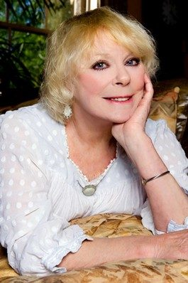

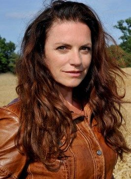

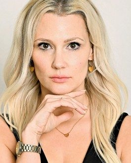

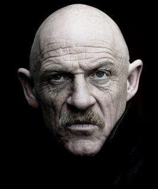

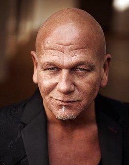

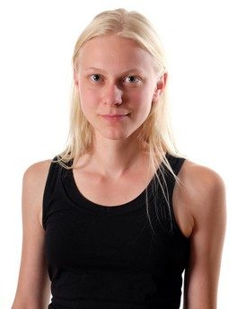

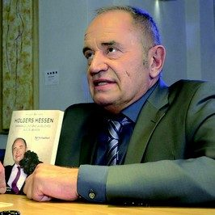

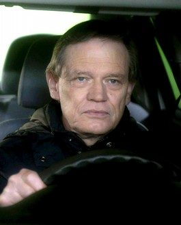

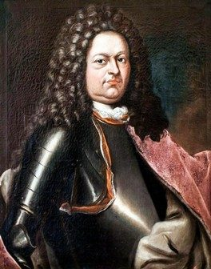

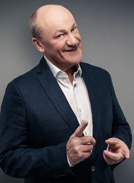

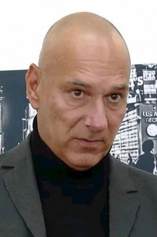

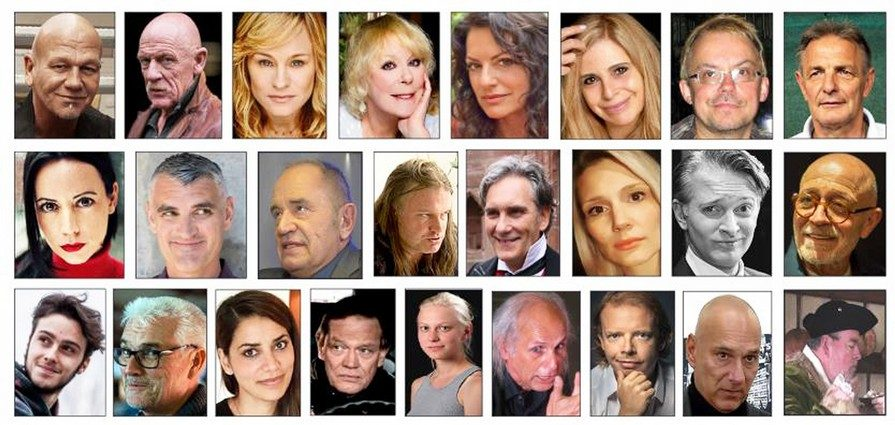

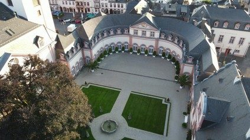

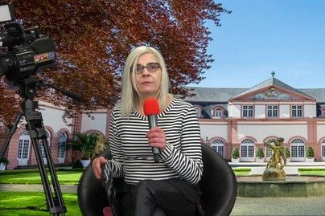